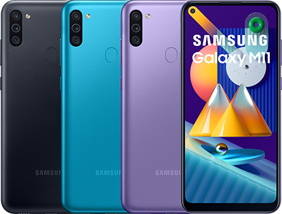
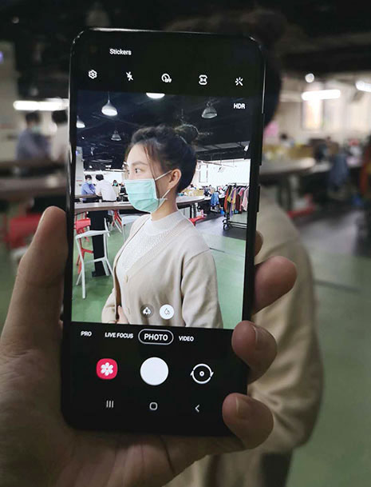
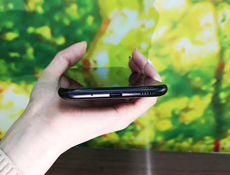
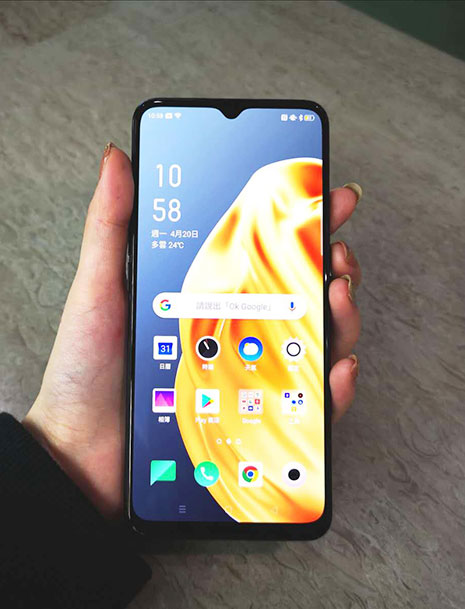

【Samsung M11 開箱文】

小平這次要為大家介紹的是三星M11，這是三星首款M系列手機在台販售，而且僅限線上通路購買，這款價格4000有找的手機，可說是麻雀雖小，五臟俱全，以下就來為大家介紹這款手機吸引人的規格。
手機使用6.4吋O極限全螢幕，並且支援杜比音效，帶給用戶全方位的視覺及聽覺體驗。

M11後置相機採用三鏡頭，主鏡頭為1300萬畫素，清晰拍下每一個片刻；500萬畫素的超廣角鏡頭，讓您平時聚會合照，或是大風景照都輕鬆拍；200萬畫素景深鏡頭，支援景深即時預覽，拍照前調整景深，突顯主視覺。同時也支援全景模式、專業模式提供使用者拍攝。前置自拍鏡頭使用挖孔屏，畫素為800萬，前置與後置鏡頭皆支援一鍵廣角及1080P錄影，整體拍攝以入門手機來說，CP值非常的高。

M11採用5000mAh超大電量，平時出門不必擔心電量不足的問題，同時支援15W閃電快充縮短充電時間。

M11提供臉部及指紋解鎖功能，另外還支援NFC電子支付，讓日常生活消費更加便利。強大的硬體功能配上親民的價格，M11可說是為入門機市場殺出了一條血路，對男女老少都是不錯的首選。